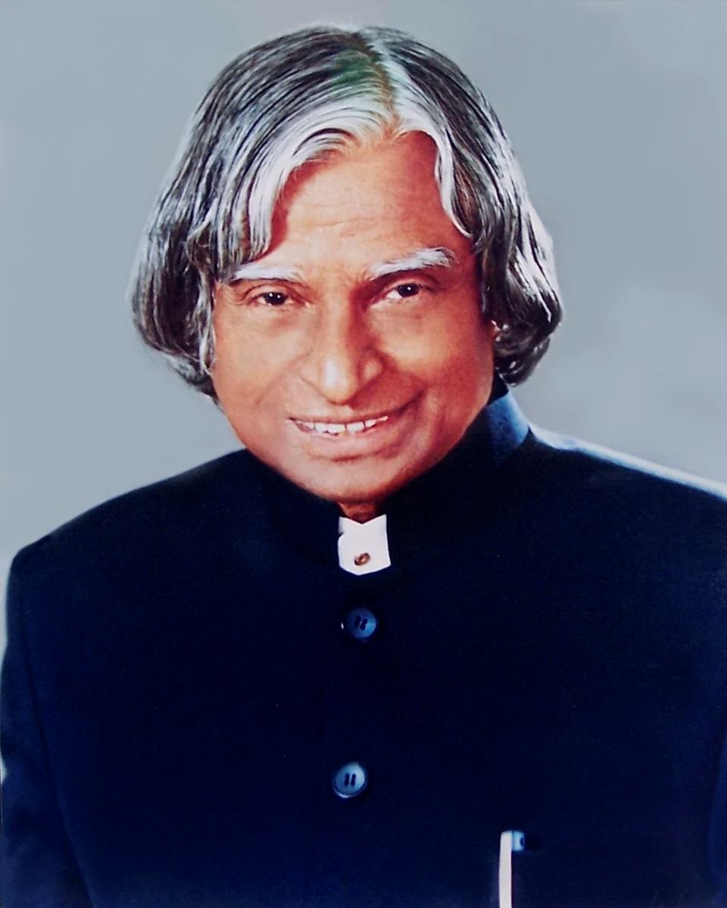

Scientist • Visionary • Teacher • People's President

Dr. A.P.J. Abdul Kalam was one of India's most respected scientists, engineers, and leaders. Born on October 15, 1931, in Rameswaram, Tamil Nadu, he rose from humble beginnings to become the 11th President of India.
Known as the "Missile Man of India," he played a vital role in India's missile and nuclear development programs. His dedication to education and innovation inspired millions of students.
Led the development of Agni and Prithvi missiles.
Contributed to India's first Satellite Launch Vehicle (SLV-III).
Served as the 11th President from 2002 to 2007.
Received India's highest civilian award in 1997.
Born in Rameswaram, Tamil Nadu.
Joined ISRO and worked on India's space missions.
Awarded Bharat Ratna.
Became the President of India.
Passed away while delivering a lecture to students.